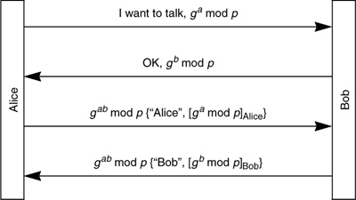

Networking Security Networking Security Networking Security Security Networking Security Networking Security Networking Charlie Kaufman Radia Perlman Mike Speciner Prentice Hall Network Security: Private Communication in a Public World, Second Edition
16.6. Endpoint Identifier Hiding
Another feature in some of these protocols is the ability to hide the identities of the two communicating parties from eavesdroppers. A mechanism for accomplishing this is to first do an "anonymous" Diffie-Hellman exchange, which establishes an encrypted tunnel, but to an unknown endpoint. The tunnel might have a man-in-the-middle, since you have not authenticated the other side (indeed you don't even know who the other side is claiming to be). After the anonymous Diffie-Hellman exchange establishes a key, the two parties divulge their identities, encrypted with the anonymous Diffie-Hellman key. Then a passive attacker will not learn their identities, but an active attacker acting as a man-in-the-middle might (depending on the particular protocol) learn one or both of the identities. In addition to divulging their identities, they should also authenticate each other based on the keys associated with their identities. An active attacker doing a man-in-the middle attack would be detected at this point, after having discovered the endpoint identities.
Note that by carefully designing the protocol, you can arrange for the man-in-the-middle to only be able to learn one of the two identities before being discovered by the other side as an impostor. Which identity is better to hide from an active attacker? One argument says that it is better to hide the initiator's identity (Alice) than the responder's identity (Bob), because Bob's identity is probably already known. He has to be sitting at a fixed IP address waiting to be contacted, whereas Alice might be dialing in from anywhere, and her identity could not be guessed from her IP address.
But a different argument says that it is better to hide Bob's identity. If Bob divulges his identity first, then anyone can initiate a connection to Bob and get him to divulge his identity. Unless there is a strict client/server model in which clients never accept connections and only initiate them, having a protocol in which the responder divulges his identity first makes it trivial to find out who is at a given IP address. In contrast, for an active attacker to trick Alice into revealing her identity, it requires impersonating Bob's address and waiting for Alice to initiate a conversation.
An example protocol, assuming the two sides have public signature keys, might be Protocol 16-4.

In this protocol an active attacker will be able to discover Alice's identity, but not Bob's. It is easy to arrange instead to hide Alice's identity (see Homework Problem 4).
If Alice and Bob know in advance to whom they will be talking (perhaps they are two spies who will be contacting each other at a specific time), then a protocol based on a shared secret key will hide both identities. This is accomplished by authenticating based on the secret key and not sending identities at all (see Homework Problem 6).
If Alice already knows Bob's public encryption key, it is possible to hide both identities from active attackers (see Homework Problem 5).
|